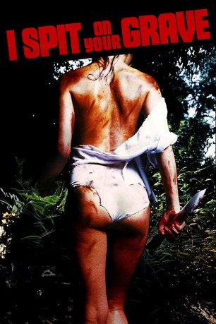

#3236 I Spit on Your Grave
Alternativ: Blood Angel
 
 IMDB-Wertung: 5.7 / 10
IMDB-Wertung: 5.7 / 10  Metascore: 19
Metascore: 19 
The film follows Jennifer, a writer who is working on a new novel and needs to get out of the city to finish it. She rents a riverside cabin in upstate New York to work on her novel, attracting the attention of a number of rowdy male locals. They catch Jennifer one day and strip her naked for the village idiot (Matthew) and rape her. Jennifer is later attacked and raped a further two times by the four degenerates, and her novel is also destroyed. But Jennifer recovers, and in her now-twisted, psychotic state, she begins to seek revenge on the men.
Jahr: 1978
Dauer: 101 Minuten
FSK: BPjM Restricted
Land: USA Studio: CinemagicTonspuren:
Untertitel:
Auflösung: 720p (1280x720) Größe: 4485 MB
Genre: Horror
Regisseur: Meir Zarchi
Drehbuch: Meir Zarchi
Soundtrack:
Darsteller:
- Camille Keaton als Jennifer
- Terry Zarchi als Child
- Eron Tabor als Johnny
- Richard Pace als Matthew
- Anthony Nichols als Stanley
- Gunter Kleemann als Andy
- Alexis Magnotti als Attendant's Wife
- Tammy Zarchi als Child
- Traci Ferrante als Waitress
- William Tasgal als Porter
- Isaac Agami als Butcher
- Ronit Haviv als Supermarket Girl
Datei: X:\FSK18-Collections\I Spit On Your Grave\I Spit on Your Grave (1978, FSKBPjM Restricted, 1280x720).mkv seit 20.02.2016
Festplatte: FSK18
 Es gibt insgesamt 9 Filme in der Gruppe 'FSK18-Collections\I Spit On Your Grave'
Es gibt insgesamt 9 Filme in der Gruppe 'FSK18-Collections\I Spit On Your Grave'